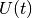

Courants continu et alternatif¶
Objectif
Introduire le concept de tensions variables dans le temps, à l’aide d’un graphique . Comparer les graphiques de continu et d’alternatif.

Procédure
- Régler PV1 à 2 V et régler WG à 200 Hz
- Activer l’analyse sur A1, afin de mesurer l’amplitude et la fréquence.
- Activer A2
Discussion
Dans le graphique, si la courbe de tension ne change pas (si elle est horizontale), c’est du courant continu pur. Si la tension change avec le temps, il y a une composante alternative. Si la tension moyenne est nulle, alors c’est de l’alternatif pur. Dans le deuxième graphique, la tension varie entre zéro et cinq volt ; est-ce du courant alternatif, continu, ou quelque chose d’autre ?